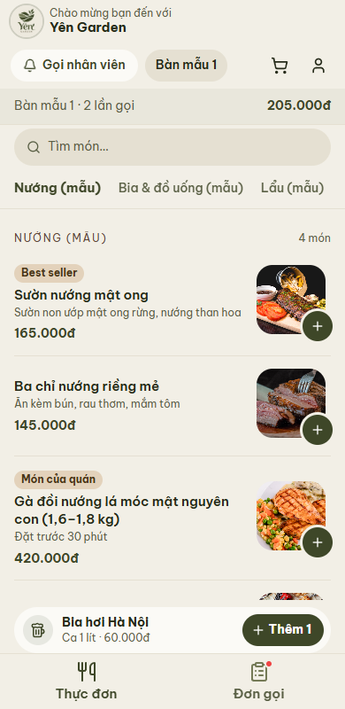
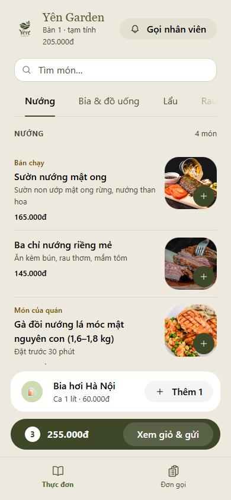
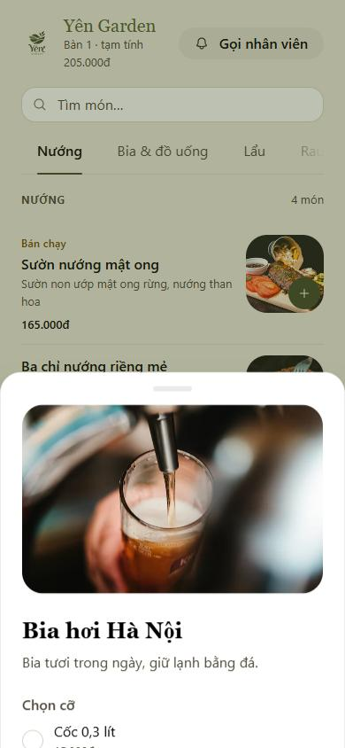
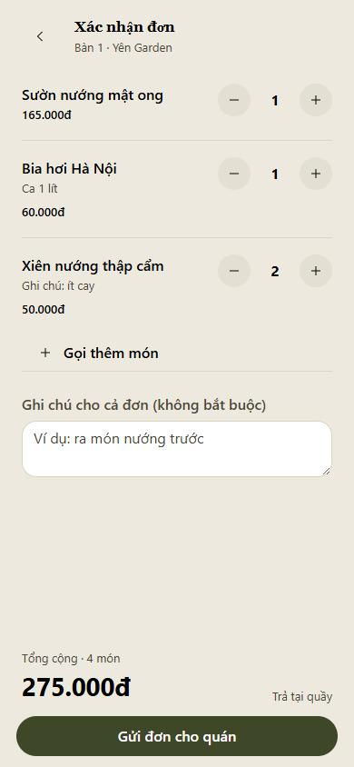
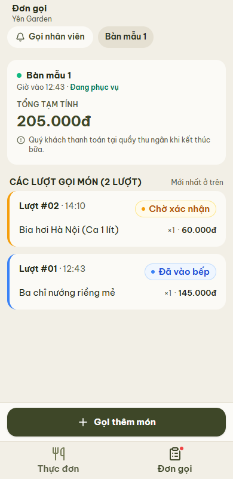
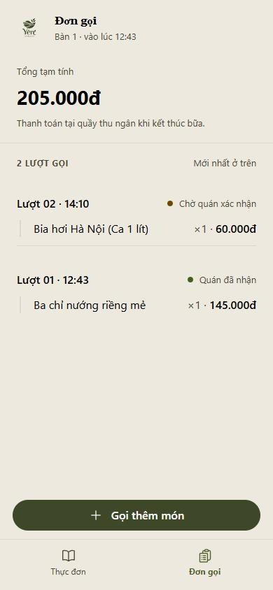
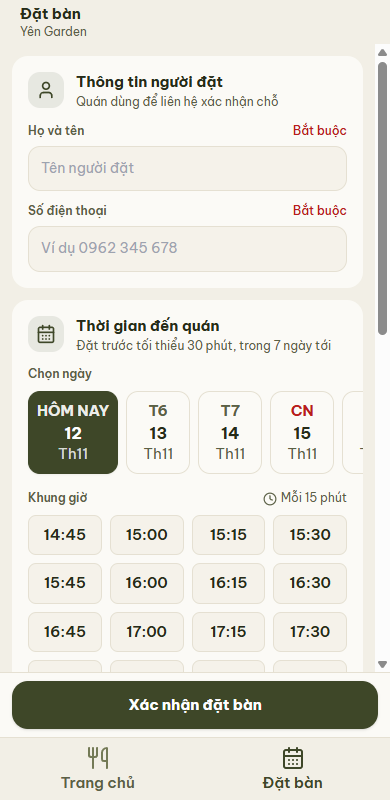
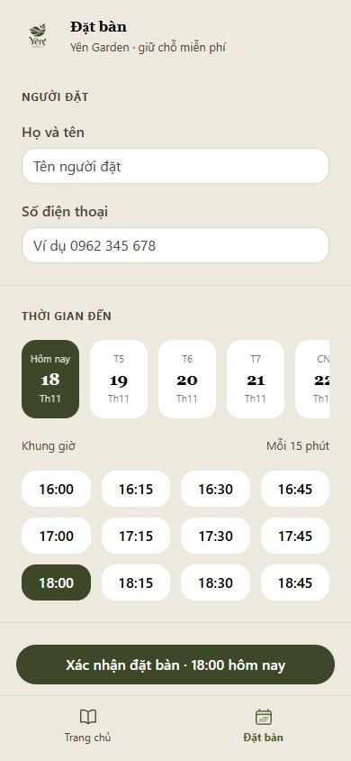
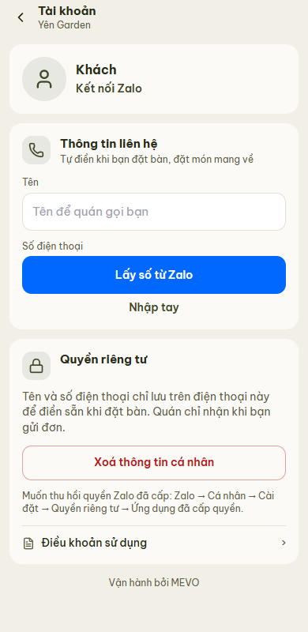
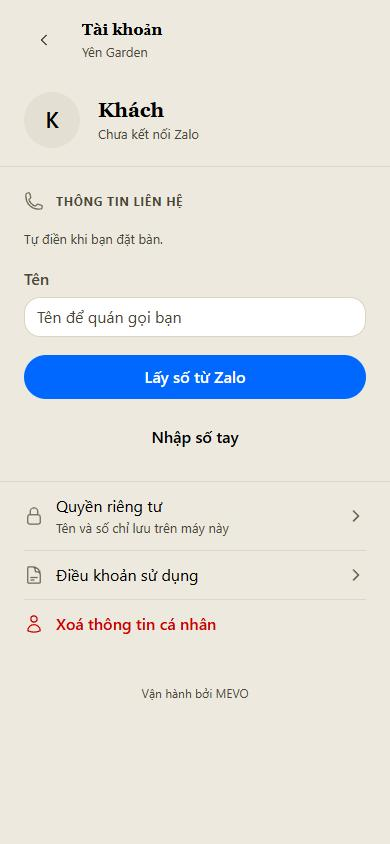

Mini App Yên Garden — thử hướng Astryx
Trái: giao diện theme "garden" đang chạy. Phải: bản vẽ dựng bằng linh kiện thật của Astryx (React 19) trong một
dự án nháp, theme yengarden tạo bằng bộ sửa theme của Astryx từ màu thương hiệu. Bản vẽ, chưa phải app.
Hướng thiết kế (rút từ quy tắc của Astryx)
- Danh sách là hàng, không bọc thẻ. Đơn gọi, Đặt bàn, Tài khoản bỏ các thẻ trắng lồng nhau, thay bằng mục phẳng có tiêu đề nhỏ in hoa + gạch mảnh. Màn nhẹ mắt hơn, ít khung hơn.
- Không dùng nhãn trang trí. "Best seller", "Món của quán" thành chữ nhỏ màu nâu thay vì viên nhãn; trạng thái lượt gọi là chấm màu + chữ thay vì viên màu + viền trái.
- Một nút chính mỗi màn, dính đáy, ghi luôn điều sẽ xảy ra ("Xác nhận đặt bàn · 18:00 hôm nay", "Thêm vào giỏ · 60.000đ").
- Chữ: tiêu đề và tên quán dùng serif Georgia (hợp logo nét mềm), chữ thân giữ font hệ thống — không tải webfont nên không chậm thêm.
- Giữ nguyên điều anh đã chốt: bố cục A (một cột, chữ trước, ảnh vuông bên phải, danh mục chữ gạch chân) và dải gọi thêm bia ngay trên thanh giỏ.
Màu (bộ sửa theme của Astryx tự kiểm độ tương phản)
- Ô-liu đậm
#3E4728làm nút chính, chữ trắng trên nền ô-liu: đạt. - Be vàng
#CBA473làm NỀN nút/nhãn chỉ đạt 2,01:1 so với nền kem (cần 3:1) → bản vẽ dùng màu này cho chữ đậm hơn#724800(5,3:1), không dùng làm nền có chữ. - Nền kem
#EDE9DE, ô nhập và ảnh trên nền trắng; chữ phụ#4B4736(đọc rõ hơn xám hiện tại).
1. Thực đơn


- Dải "Bàn mẫu 1 · 2 lần gọi · 205.000đ" gộp vào dòng phụ dưới tên quán → bớt một hàng, menu lên cao hơn.
- Ảnh món 88px bo 16, nút + nằm gọn trong ảnh; hàng cách nhau bằng gạch mảnh.
- Thanh giỏ dạng viên ô-liu: số món · tổng · "Xem giỏ & gửi".
- Bản vẽ bỏ icon giỏ + tài khoản ở góc trên (giỏ đã có thanh dưới). Nếu dựng: chạm logo mở Tài khoản, hoặc giữ một icon tài khoản nhỏ — anh chọn.
2. Chi tiết món
Chưa có ảnh chụp — cần chạy Mini App (đang chờ cổng secrets, D-016).

- Tấm trượt từ dưới gần full màn: ảnh 16:10, tên món serif, chọn cỡ dạng danh sách chọn một, ghi chú, bộ tăng giảm + nút "Thêm vào giỏ · giá".
3. Xác nhận đơn
Chưa có ảnh chụp sau commit 5689078 — cần chạy Mini App (D-016).

- Mỗi món một hàng, tăng giảm ngay bên phải; "Gọi thêm món" là nút chữ; tổng cộng to + "Gửi đơn cho quán" dính đáy. Giữ đúng việc vừa bỏ khối "Món sẽ được gửi cho bàn này" và dòng "Tạm tính món".
4. Đơn gọi


- Bỏ thẻ viền trái vàng/xanh + viên trạng thái → mỗi lượt là một mục phẳng, chấm màu + chữ trạng thái.
- Chữ trạng thái khi dựng sẽ giữ đúng chữ app đang dùng theo chính sách duyệt ("Chờ xác nhận", "Đã vào bếp"…); bản vẽ chỉ minh hoạ.
5. Đặt bàn


- Một form cuộn liền (mẫu "settings" của Astryx): Người đặt → Thời gian đến → Số khách, không thẻ lồng thẻ.
- Nút chính ghi luôn giờ đã chọn. Ô "Bắt buộc" đỏ bỏ đi, báo lỗi khi bấm gửi mà thiếu.
6. Tài khoản


- Quyền riêng tư, Điều khoản, Xoá thông tin thành 3 hàng có mũi tên (đoạn giải thích dài vào trong). Nút "Lấy số từ Zalo" giữ xanh Zalo.
Nếu anh duyệt dựng vào app
- Không thêm thư viện Astryx cần React 19 + StyleX, Mini App đang React 18 + zmp-ui → không nhét linh kiện
Astryx vào được (và sẽ làm app nặng hơn). Em chép lại kiểu dáng bằng Tailwind vào các nhánh
gardensẵn có. - Chỉ theme garden Bảo Lương / Pubu (classic) giữ nguyên, chụp ảnh chứng minh.
- Cần anh mở cổng
secrets(D-016) để chạy Mini App chụp trước/sau.